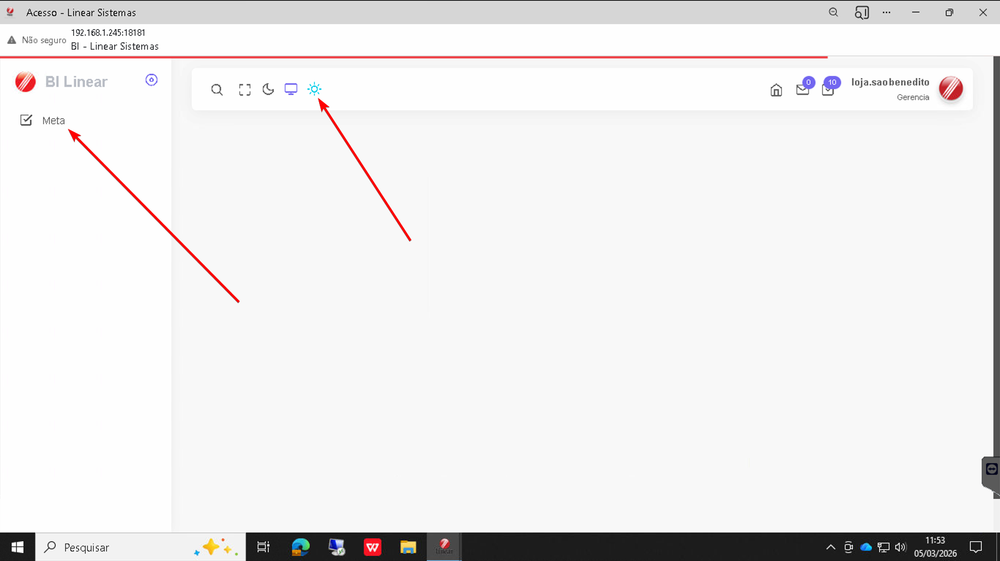
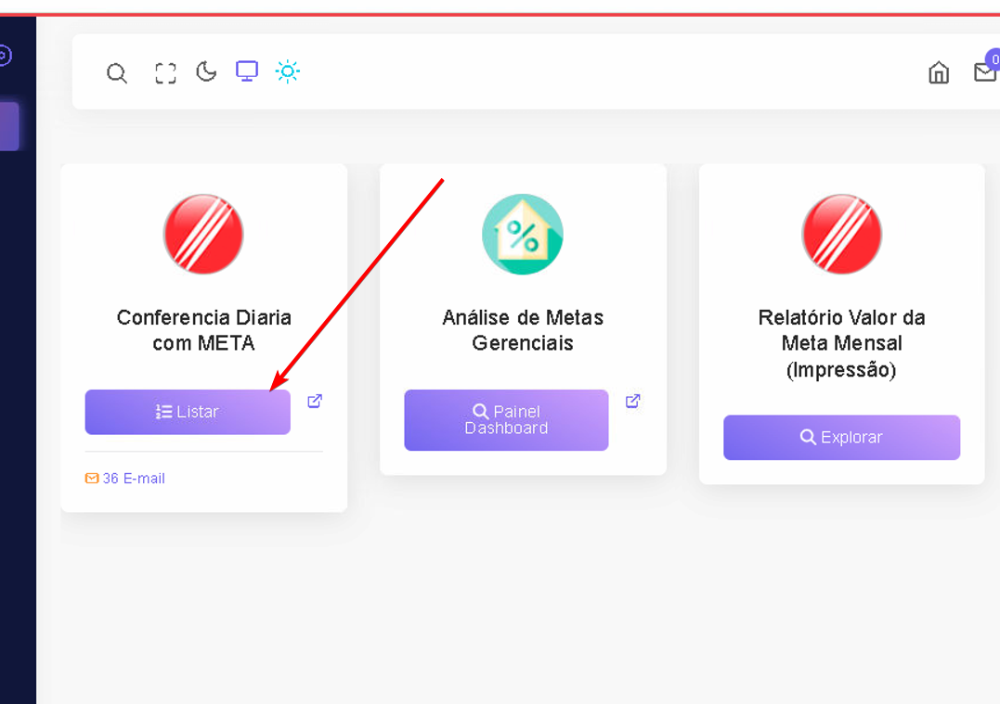
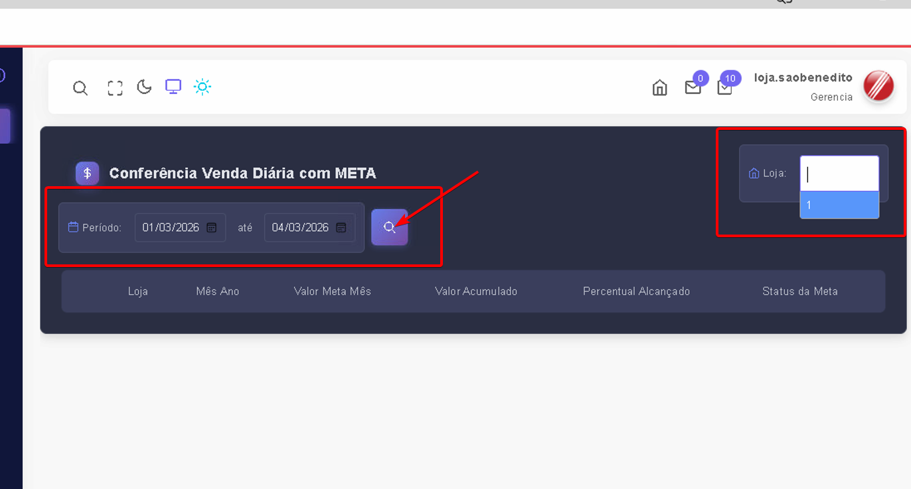
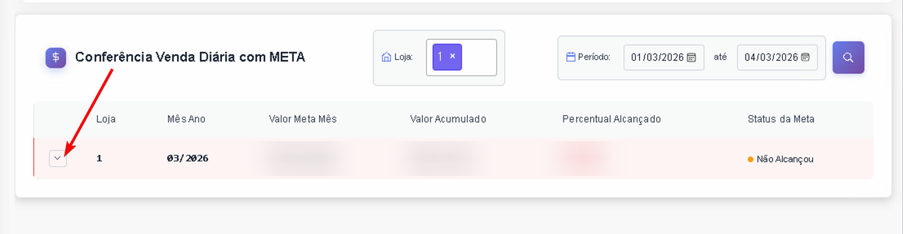
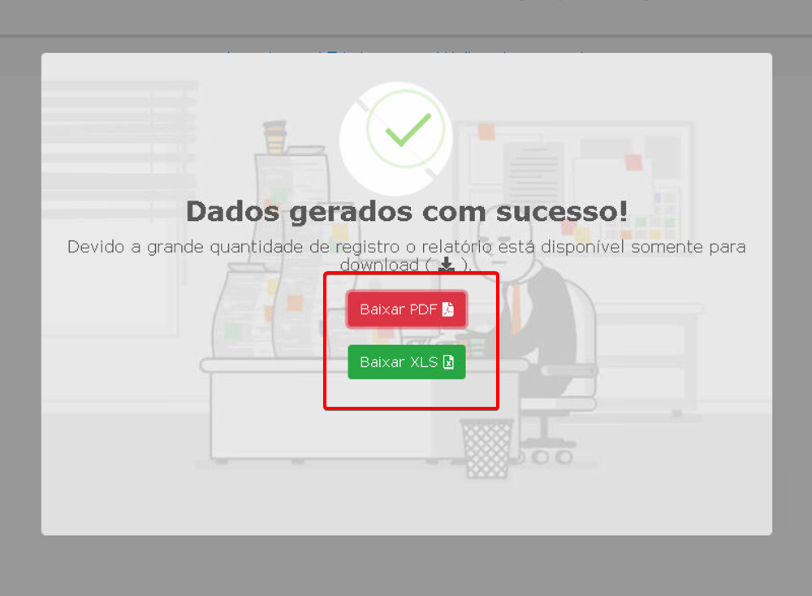
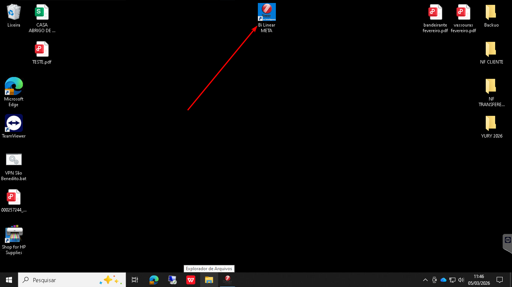
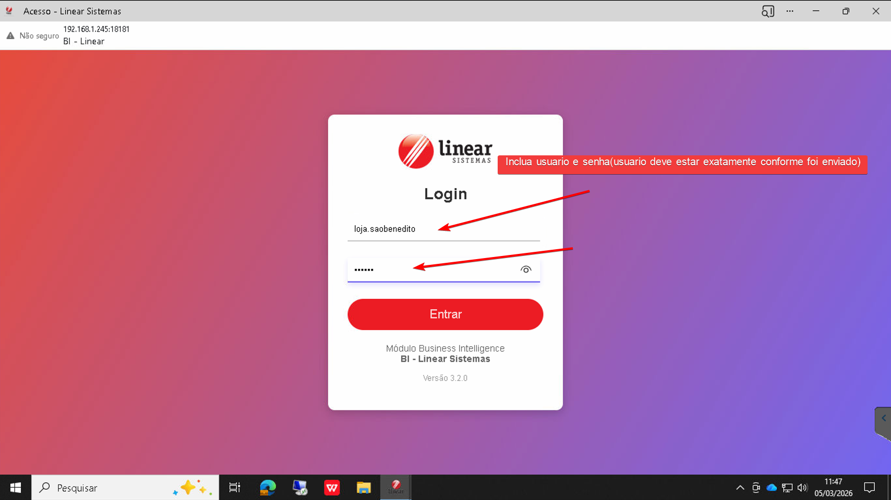
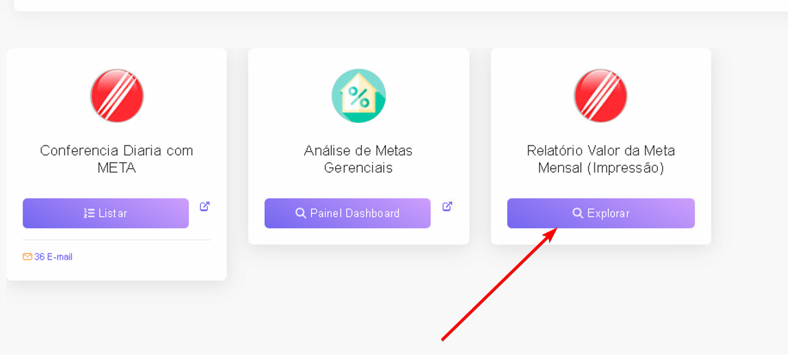
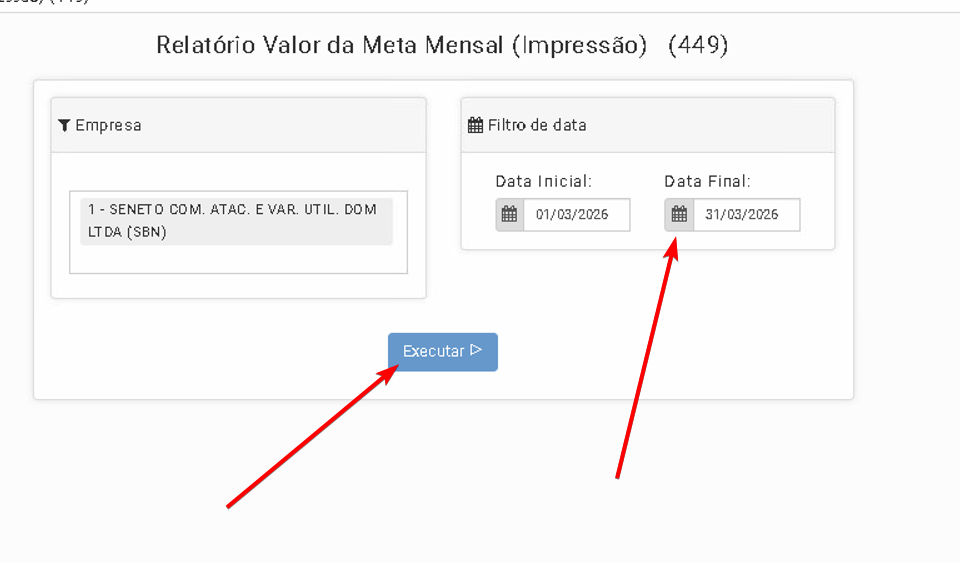

Como entrar no BI
Passo a Passo :
- Passo 1: Abrir link na Area de Trabalho.
- Passo 2: Coloque usuario e senha(Usuário deve estar exatamente conforme enviado).
- Passo 3:Clique no Solzinho e depois Clique em META.

- Passo 4:Clique em Listar.

- Passo 5:Modifique Data e inclua a sua filial, depois clique na lupa.

- Passo 5:Clique na setinha e veja a sua meta por dia.

- OBS: Só é possivel visualizar a meta dos dias que já passaram, Caso queira ver a meta diaria dos dias é necessario seguir esse passo a passo:
- Passo 1: Vá para a Aba de meta. e Clique em Relatório valor da meta mensal
- Passo 2: Verifique se a data está certa e após clique em executar.
- Passo 3:Escolha entre baixar o PDF ou a planilha com a meta..

- Agora você pode conferir a meta pelo documento




Nota: Se após esses testes não Resolver, abra um chamado técnico informando o que já
foi feito no Grupo do TI.